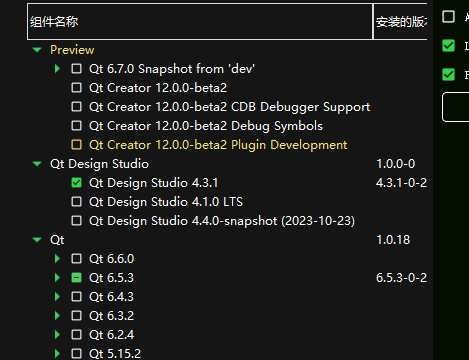
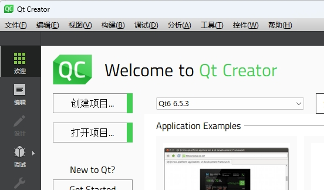
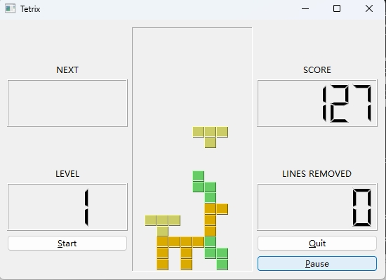
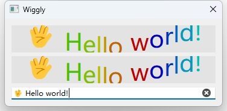

Generates Python bindings for the Qt6 library with PySide6 on Windows 11
Table of contents
- Walkthrough examples on Windows
- Install Qt environment
- Requirements
- (Option 1) Install PySide6!
- (Option 2) Download PySide source code and build from source!
- 1. Install Visual Studio 2019 64bit and C++ toolchain as needed.
- 2. Install Qt and don't forget install source code as well.
- 3. Download and setup Clang which used for C++ python binding generation.
- 4. Setup conda environment for pyside compilation:
- 5. Cloning the official repository can be done by:
- 6. Building PySide
- ISSUES THAT I came across.
- Tips of pakcage installation.
- Test PySide6 installation
- Write C++ generate Python bindings for usage.
- Level 2: Make a Qt C++ application scriptable
- Level 3: Generate Python bindings for a Qt C++ library
This blog is a companion piece to my early blog Generates Python bindings for the Qt6 library with PySide6 on MacOS, but on Windows 11 with several setup changes.
I've been using PyQt5 for years which is de facto standard Qt python binding library until PySide2 has been offically announced up by the Qt Company in year of 2018. Five years on, I think PySide is mature enough to be used in production environment. This post request you to have C++ and compiler toolchain knowledge, since I won't explain much about details of CMake syntax and C++ build system.
Walkthrough examples on Windows
Install Qt environment
If you won't modify Qt C++ source, it is recommanded to install Qt pre-build by download qt installer online and install Qt by clicking next till end. Intaller can be download under https://www.qt.io/download-open-source.
CAUTION: You MUST install Qt same version as PySide! Otherwise the abi consistancy is doomed.
The latest Qt version at the time of writing is 6.5.3 , we will stick to this version here.

You can check which version of Qt you have installed on system. 
If you can see Qt installed under C:\Qt\6.5.3, it means you can proceed.
Requirements
- Visual Studio 2019 with C++ tool chains.
- CMake == 3.26.4 (de facto cross-platform C/C++ build system for other build systems)
- Ninja == 1.10.2 (the famous tool
make's modern alternative) sphinxpackage for the documentation (optional).
I am get used to Anaconda environment, its the same of you to use virtualenv.
Create a new python environment using Python 3.11 (PySide6 only supports Python > 3.8 and it's no difference to use 3.9, 3.10, 3.11), I use 3.11 because it is latest Python version at the time of writing.
conda create --name pyside python=3.11
conda install ninja
conda install cmake
ninja --version
cmake --version
If everything works fine and no output complains about missing something then you can proceed.
(Option 1) Install PySide6!
There is easy way and hard way to install PySide6 in your python environment.
- Easy way:
pip install PySide6. Done! - Hard way: Man you are brave enough! Lets do this.
(Option 2) Download PySide source code and build from source!
1. Install Visual Studio 2019 64bit and C++ toolchain as needed.
Download Visual Studio 2019 online installer and install it on your computer.
Add Visual Studio 2019 compiler launcher path to system enviroment variable Path.
Add "C:\Program Files (x86)\Microsoft Visual Studio 14.0\VC\bin" at tail of variable
Pathin system enviroment forCMaketo find proper compiler paths.
2. Install Qt and don't forget install source code as well.
Download Qt online installer and install it on your computer, in customize option click
source codeit will download source code besides binary files.
Add Qt install path to system environment variable Path.
Add "C:\Qt\6.5.3\msvc2019_64\bin" at tail of variable
Pathin system enviroment forCMaketo find proper Qt include and library cmake paths.
3. Download and setup Clang which used for C++ python binding generation.
wget https://download.qt.io/development_releases/prebuilt/libclang/libclang-release_140-based-macos-universal.7z
Extract the files, and leave it on any desired path, and set the environment variable required:
7z x libclang-release_140-based-macos-universal.7z
set LLVM_INSTALL_DIR=$PWD/libclang
Or add environment variable named
LLVM_INSTALL_DIRand set its value toC:\lib\libclang-release_17.0.1-based-windows-vs2019_64\libclang('C:\lib\' is the folder where I extracted the compressed 7z file to)
4. Setup conda environment for pyside compilation:
conda create --name pyside python=3.11
Install cmake, ninja, numpy
conda install cmake
conda install ninja
conda install numpy
5. Cloning the official repository can be done by:
git clone https://code.qt.io/pyside/pyside-setup
Checking out the version that we want to build, for example, 6.5.3:
cd pyside-setup && git checkout 6.5.3
Install the general dependencies:
pip install -r requirements.txt
NOTE: Keep in mind you need to use the same version as your Qt installation
6. Building PySide
Check your Qt installation path, to specifically use that version of qtpaths to build PySide. for example, C:\Qt\6.5.3\msvc2019_64\bin\qtpaths.exe. (This qtpaths is a small program to get locations of Qt)
Build can take a few minutes, so it is recommended to use more than one CPU core:
python setup.py build --build-tests --ignore-git --parallel=16
My PC is equiped with AMD-7950X CPU it has 16-cores so i use
--parallel=16here :P
ISSUES THAT I came across.
1. UnicodeDecodeError: ‘gbk‘ codec can‘t decode byte.
UnicodeDecodeError: 'gbk' codec can't decode byte 0x82 in position 2202: illegal multibyte sequence
Traceback (most recent call last):
File "C:\Users\Admin\Dev\pyside-setup\setup.py", line 42, in <module>
setup_runner.run_setup()
File "C:\Users\Admin\Dev\pyside-setup\build_scripts\setup_runner.py", line 207, in run_setup
self.run_setuptools_setup()
...
...
...
qt_target_mkspec_output = configure_cmake_project(
^^^^^^^^^^^^^^^^^^^^^^^^
File "C:\Users\Admin\Dev\pyside-setup\build_scripts\utils.py", line 1091, in configure_cmake_project
m = _configure_failure_message(project_path, cmd, return_code,
^^^^^^^^^^^^^^^^^^^^^^^^^^^^^^^^^^^^^^^^^^^^^^^^^^^^^^^^^^
File "C:\Users\Admin\Dev\pyside-setup\build_scripts\utils.py", line 1024, in _configure_failure_message
error_text = indent(error.strip(), " ")
^^^^^^^^^^^
AttributeError: 'NoneType' object has no attribute 'strip'
Traceback (most recent call last):
File "C:\Users\Admin\Dev\pyside-setup\setup.py", line 42, in <module>
setup_runner.run_setup()
File "C:\Users\Admin\Dev\pyside-setup\build_scripts\setup_runner.py", line 263, in run_setup
raise RuntimeError(msg)
RuntimeError:
setup.py invocation failed with exit code: 1.
Because I use Chinese Simplified language on my computer, this is an known issue. You can just fix it by explicit creating the Popen with encoding as 'utf-8' or change Popen default init method n subprocess.py.
Tips of pakcage installation.
After you have built PySide2 project successfully, you will get Official PySide6 package under qfp-py3.11-qt6.5.3-64bit-release
folder in build we create early. There is a lot of Qt*.dll in package/PySide6 that ready to be imported by your
python script.
But before we use PySide6 in our python script, we must first install them into our site-packages for python
executable to find.
You can use
python setup.py --helpto see the usage of commandline of setup tool. Or usepython setup.py --help-commandto see detailed argument usage.
The setup commandline tool is powerful, it can generate egg files, wheels and dist-info folder for package distribution.
But here we just use python setup.py install --build-tests --ignore-git --parallel=16 to install package with dist-info(stores meta information of package for usage).
Test PySide6 installation
You can execute one of the examples to verify the process is properly working. Remember to properly set the environment variables for Qt and PySide:
python examples\widgets\widgets\tetrix\tetrix.py

Write C++ generate Python bindings for usage.
Level 1: Generate Python bindings for a non-Qt C++ library
https://doc.qt.io/qtforpython-6/examples/example_samplebinding_samplebinding.html
There is a demo of non-Qt C++ library Python binding generation called samplebinding located at PySide/examples/samplebinding.
You can practice this demo by reading the documentation under the folder samplebinding/doc/samplebinding.rst.
If you walkthrough the hard trip and built PySide6 your self, your toolchain environment is well
configured to work properly on this demo. But if you install PySide6 using PIP, then you will need to install
shiboken6-generator which can't be install throgh PIP and isn't included in the PySide6 PIP installation.
shiboken6-generator package wheel can be manually downloaded from website https://download.qt.io/official_releases/QtForPython/shiboken6-generator/ . Using pip install shiboken6_generator-6.5.3-cp37-abi3-win_amd64.whl
to install.
If you build PySide6 from sources, besides
PySide6,shiboken6andshiboken6-generatorwill also be compiled and installed from source.
Level 2: Make a Qt C++ application scriptable
https://doc.qt.io/qtforpython-6/examples/example_scriptableapplication_scriptableapplication.html
This example demonstrates how to make a Qt C++ application scriptable.
The exmaple document is really detailed, so you can walkthrough it easily.
In the end you will get a scriptableapplication which can be runned as an executable program.
This example is exactly the opposite of example "Level 1: Generate Python bindings for a non-Qt C++ library".
In previous example, we compile C++ into dynamic shared library together with loadable module and use C++ objects in Python runtime environment. But in this example, the direction is the opposite, it compiles C++ application and link against python library, embed python runtime context in it, so the Qt application actually invokes Python script.
Level 3: Generate Python bindings for a Qt C++ library
Amazingly, we've gotten this far, and it's time to treat ourselves a little bit with a cup of coffee.
This URL https://doc.qt.io/qt-6/qtwidgets-widgets-wiggly-example.html given in README is 404 not found now. So lets explore it on our own.
According to README of this example, it shows how to interact with a custom widget from two different ways:
- A full Python translation from a C++ example,
- A Python binding generated from the C++ file.
We only focus on the second in this post.
Following the steps to build the bindings in README
The most important files are: *
bindings.xml, to specify the class that we want to expose from C++ to Python, *bindings.hto include the header of the classes we want to expose *CMakeList.txt, with all the instructions to build the shared libraries (DLL, or dylib) *pyside_config.pywhich is located in the utils directory, one level up, to get the path for Shiboken and PySide.Now create a
build/directory, and from inside runcmaketo use the providedCMakeLists.txt:macOS/Linux:
bash cd ~/pyside-setup/examples/widgetbindingOn Windows:
cd C:\pyside-setup\examples\widgetbinding
mkdir build
cmake -H.. -B. -G "Visual Studio 16 2019" -DCMAKE_BUILD_TYPE=Release -DCMAKE_OSX_ARCHITECTURES=x86_64
msbuild wiggly.sln /property:Configuration=Release
cd ..
copy build\Release\wiggly.pyd . /Y
copy build\Release\libwiggly.dll . /Y
python main.py
Result: Congratulations Hello PySide6 from C++!
cmake -H.. -B. -G "Visual Studio 16 2019" -DCMAKE_BUILD_TYPE=Release -DCMAKE_OSX_ARCHITECTURES=x86_64
msbuild wiggly.sln /property:Configuration=Release
cd ..
copy build\Release\wiggly.pyd . /Y
copy build\Release\libwiggly.dll . /Y
python main.py
